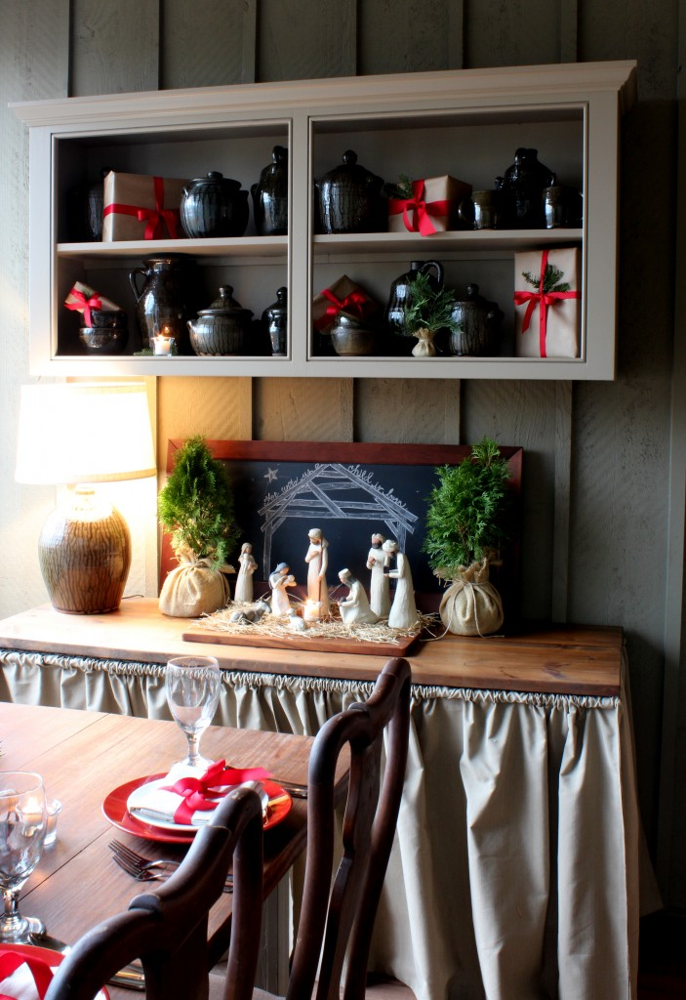

.png)
.PNG)
.PNG)
.PNG)
.PNG)
.PNG)
.JPG)
.JPG)
.PNG)
.PNG)


This post is best enjoyed with music of the season, so click here. Let it play while you read.
It is Christmas Eve. We have finished enjoying food and sharing gifts with my side of our family, and tomorrow we will do the same with my husband’s family. But tonight I want to share one last Christmas Traditions post with you. I have saved the porch for last.
The porch was actually the first room I started decorating for Christmas this year, but it is the last I am writing about because the Nativity seems so fitting for this night.

This night – the night when God sent his Son to live among us. I like to put the nativity out on the porch because it is my small way of following the Christmas story with a symbolic “no room in the Inn.”

Today I purchased a few more pieces of the set … a shepherd, a camel, and more stable animals.

They seem to be perfect for the table on the porch.


The rest of the porch continues with red for Christmas like most of the house has.

There are boxes wrapped simply in kraft paper and tied with red ribbon atop the storage cabinet.


Another little stable animal has wandered away to the end table by the sofa.

And yes, there is a Christmas tree on the back porch, too.
It is trimmed in red berry balls, pinecones, a red berry garland, and a vine garland.
The basket over the desk is full of cuttings from one of the holly trees in the backyard.
And that is all for you on this very foggy Christmas Eve. (Rudolph is badly needed.)

Before I say goodnight, I want to thank you for the gift of your company through all my posts this Christmas season. It has been such a joy to share them with you and to read all your wonderful comments and emails. I pray that your Christmas Day is full of joy, merriment, and awe of the true gift of the season…God’s love.

Merry Christmas!


.PNG)
Thank you SO very much for sharing your beautiful Nativity scene! I was inspired by yours – with the candle and hay, that I copied it myself!
What a beautiful place you have created!
Your porch looks so beautiful and inviting. Thanks for sharing such beautiful images of your home this time of year!!
———————————————————————-
Marci – I love to decorate the porch for Christmas, and I appreciate your kind words for the room. (Can we call it a “room”?) Thank you so much for reading the posts this holiday season. They have been a lot of fun to share!
Kelly
Your porch is just beautiful! I love the little stable you drew on your chalkboard. Precious!
———————————————————————–
Susan – Thank you. I thought the stable turned out very nicely for the manger scene, and the dark background of it worked well to make it look like night (stars and all.) I used to put the nativity in the middle of the table on the porch for the centerpiece, but I believe I like it on the table better.
I hope you and your family had a great Christmas.
Kelly
What a beautiful Christmas post! I’m a little behind, so I’m reading backwards… Merry Christmas (a little late)!!
———————————————————————
Paula – So glad you are catching up! even if you ARE reading backwards. 🙂 And I am happy you liked the nativity post. I will certainly take a “Merry Christmas” anytime. Happy new year to you!
Kelly
Just catching up on your last few posts and appreciating this one most of all. All the blessings of the season to you and your family. And, here’s hoping Santa was very good to everyone there. (Drooling over the porch!)
———————————————————————–
Paula – Thank you for your kind words about the porch. I saved it for last because I too, thought it would be most appreciated. Santa was very generous to all of us here this year! Between the Nook, the Kindle, and all the books that we received, everyone is spending lots of time reading. Glad you are reading my posts! 🙂
Kelly
Your porch is so inviting! I just love everything about it! I love your idea of the nativity being on the porch to symbolize no room in the inn. I think I may have to borrow that idea next year. The last two years I have put my nativity in the dining room on a piece of furniture my husband made. I like that it has a place of prominence in my home, but I really love your idea! My whole house is full of things that have personal meaning.
————————————————————————-
Lynne – I think it is a wonderful idea to place the nativity on a piece of furniture that is so important in your home! I guess what is important is that we have one out to symbolize the birth of Jesus – no matter where we place it. Our porch is used regularly – especially during December when we have parties here, so the nativity is seen out there too. Thank you for your compliment on the room and on the idea to place the nativity there! I am glad you liked it.
Kelly
Hope you & your family had a wonderful Christmas! As usual, I love all your decorations!
———————————————————————–
Stephanie – You are so sweet! I think the porch looks its best when dressed for Christmas. I had to move some of the taller pieces inside today because the wind was extremely strong with the storms that came through. It was blowing the door open and close, and I was afraid Joseph and the wise men were going to take flight! 🙂 Hope your Christmas was a good one too!
Kelly
So pretty!! Will you give us the source on your nativity? I love it. Hope you guys had a Merry Christmas!!!
Missy
———————————————————————-
Missy – I really searched for a long time to find a nativity that I liked. It was the simplicity of this one that sold me on it. It is from Willow Tree, and you can find it here http://www.demdaco.com/Nativities/901002002,default,sc.html?brandId=WT We did have a merry Christmas, thank you. But the storms last night were not fun. I am very thankful we did not get the problems with it that others in the South had yesterday.
Kelly
Merry Christmas! I have just discovered your blog in the past few weeks and have spent lots of time on it! I look forward to more beautiful posts in the coming year. Thank you!
————————————————————————-
Ann – I am so happy you found my blog! Thank you for reading my posts – especially in this very busy time of year. I appreciate my readers so much!
Kelly
I have been quietly stalking your blog for a few weeks now and want to move in! Every room is so cozy and inviting. You have a beautiful home!!
———————————————————————
Heather – So glad you came out of your “stalking mode.” I am happy you like the house! It has been fun to decorate this holiday season since I love red so much. Happy new year to you and your family!
Kelly
I have truly enjoyed all of your Christmas traditions you have shared with us. Hope you are enjoying your day filled with family,
love and the spirit of the season.
I so so love your blog, posts and home. ( I am a retired k5 teacher and wonder how you have time to do all you o!) your porch is so lovely. I also have the Willie tree navitity. I thought just the basic pieces were enough…but i think I will try to find a few more animals to add to a basket, too. Great idea! Enjoy your Christmas vacation!
Kelly,
Lovely. Hope you’re enjoying a blissful and restful day. We’re off to see Les Miserables. Our second Christmas celebration with family will be next Saturday when our Austin son, wife and granddaughter arrive.
xo,
Karen
it goes without say that i adore your porch (always)…and i love how you used the nativity there to symbolize “no room in the inn”.
merry christmas sweet friend…”see” you in 2013!
Stunning!
Merry Christmas, Kelly!
This is a precious post… Love everything!
Kelly, Thank you for sharing all of your family traditions with us. I have enjoyed the journey. Your home is really beautiful and very inspiring. God Bless you and have a very Merry Christmas.
Thank you for inspiring us! Have a wonderful Christmas.
Beautiful! Merry Christmas!
Merry Christmas! Your home is lovely!
All the best to you and your family this holiday season. Your blog is a wonderful gift to all of us; thank you for sharing with us. Blessings –
Merry Christmas Kelly….may you enjoy a most joyous Christmas Day with your loved ones near!….your porch is so beautifully decorated … I truly enjoyed reading about your traditions….
Kelly, Merry Christmas! I love your Nativity set. It is very pretty. Thanks for sharing your home with us!